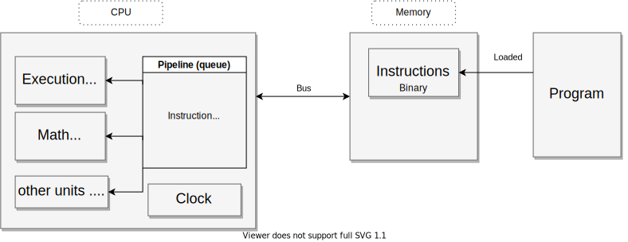
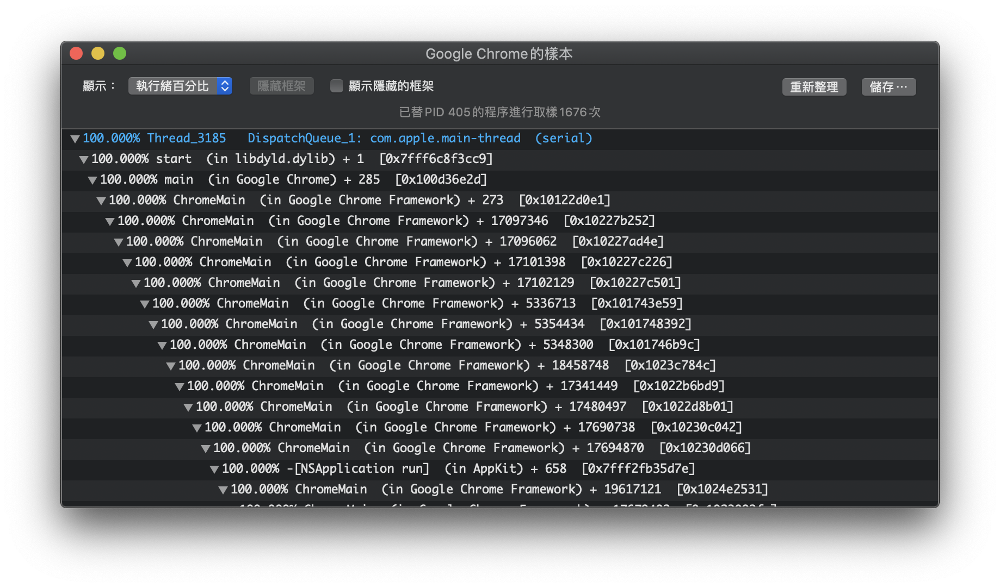

Thread & Process series - 1
Dec 22, 2020 11:43 · 400 words · 2 minute read
Motivation
What’s the relationship between thread and process? And how thread or process is related to our program?
I found myself getting used to building stuff from frontend to backend, and set up environments to host everything and keep everything running as I expected. However, sometimes I’m confused about does my program really runs as I thought it should be? Or there is something that exists which I never have noticed. Therefore, I’d like to dig into some fundamental topics and take some notes to help me clearly walk through everything.
Concepts
-
Program:
- Usually, it just means the code we write, but more specifically, that code that has not yet been loaded to the memory.
-
Thread:
- By definition, a thread is the basic unit of execution within a process. And a process can contain from one thread to many threads.
- Sometimes, we see
threadin some tech documents, they are not referring to the OS level thread, but they mean kind of same abstract concept but underlying execution might differ from one language, framework, library to another. - Thread has its own execution states and piority.
- Process:
- Originally, process means any program is in execution. A process can create other processes (a.k.a child processes).
- Process can also be seen as a container of threads.
- Processes are isolated from one another, they does not share any memories with each other.
- Applications nowaday will not only create multiple processes, but also multiple threads within those processes. 
CPU scheduler
- when multiple threads of instruction waiting to be executed, CPU scheduler will be incharge to deal with context switching and execute all the instruction.
Monitoring
Linux, MacOS
- Using
pscommand can check out the process information - For MacOS, we can open the activity monitor app to see all the processes running, and
pidlisted in the window shows the process ID number for each program.ps -M $pidorsudo dtruss -ap $pidcan show the list of threads running for the specific process.- Because MacOs has its own implementation for threads management, it’s difficult to find the real thread ID for the specific thread. However, you can see the
threadcolumn within the monitor app.- Alternative, you can use the monitor app to utilize the sampling feature, to checkout some running thread information. 
- For Linux,
ps -eLf | grep my-process-namewill give not only the list of thread information but also provide thread ID.